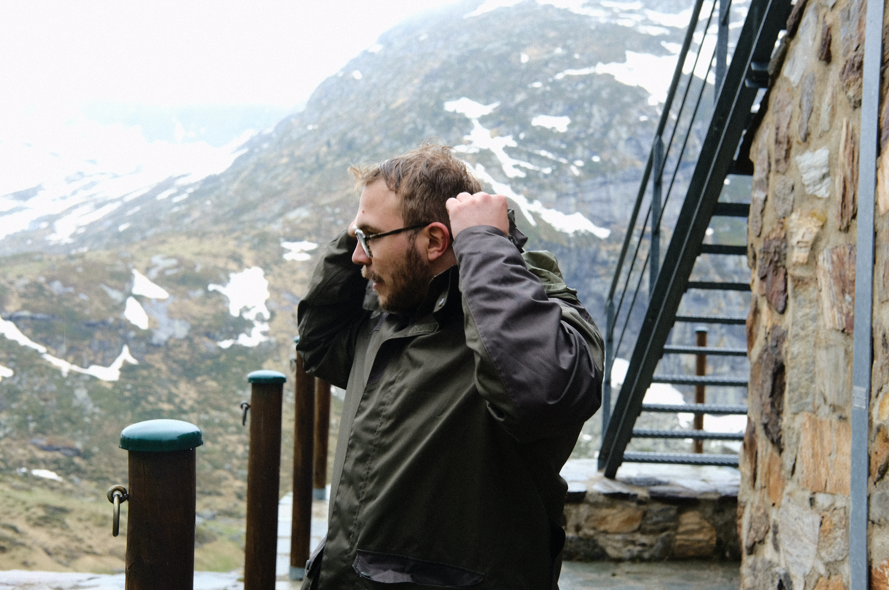
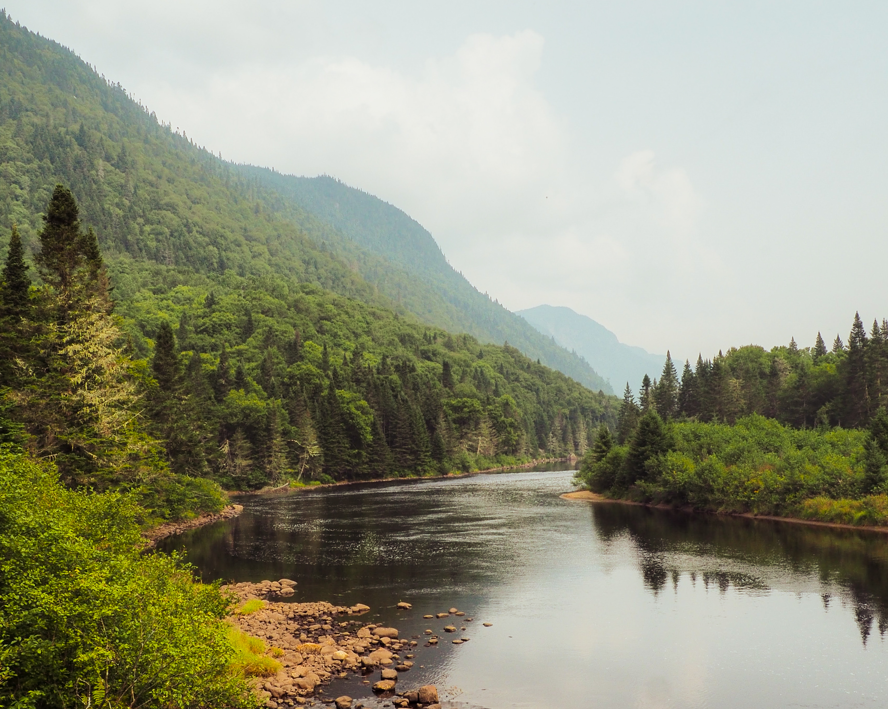
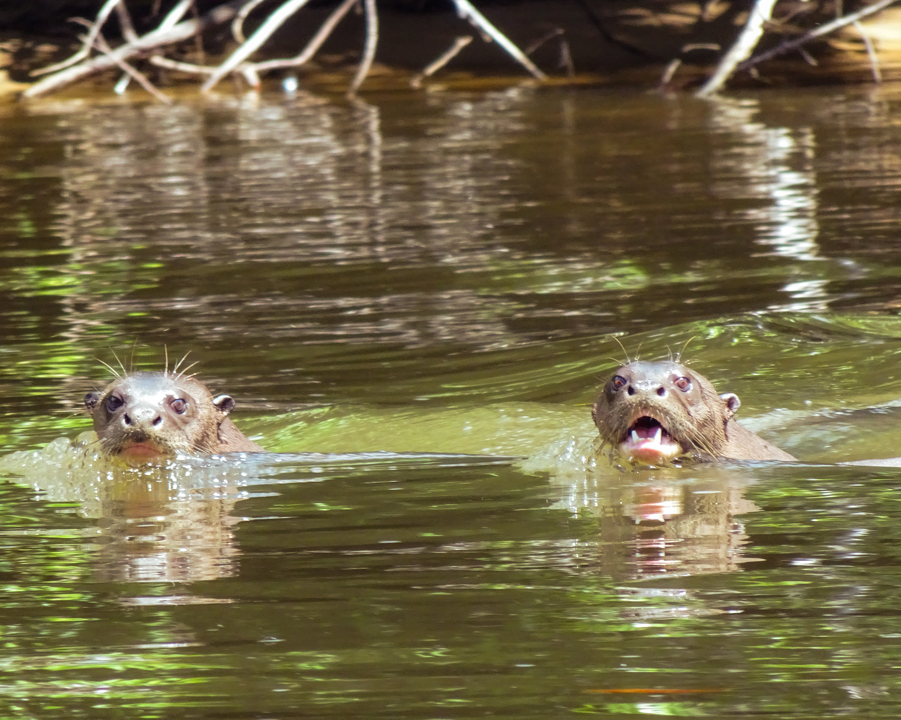
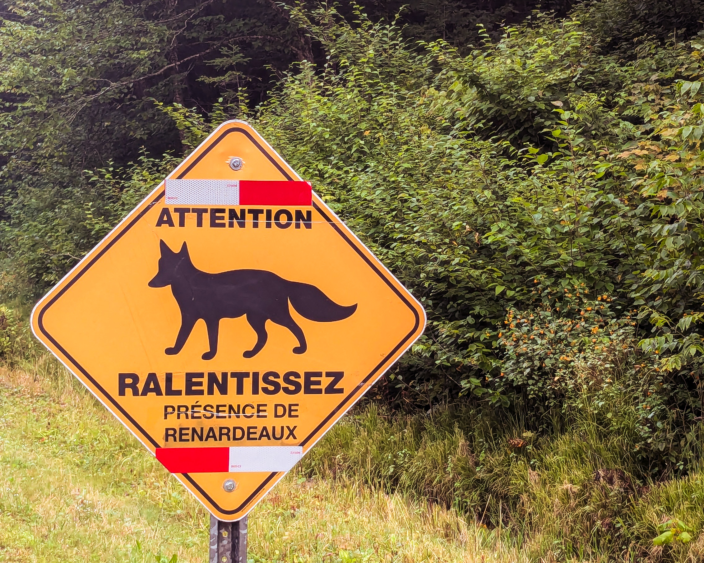

Research
I am a third-year PhD student at the Centre de Recherche sur la Biodiversité et l'Environnement (CRBE), Université Toulouse III — Paul Sabatier, supervised by Aurèle Toussaint and Sébastien Brosse.

Functional diversity of vertebrates in a context of biodiversity crisis
My research uses a macroecological approach to study vertebrate species exploited by humans in the context of the global biodiversity crisis. I identify functional traits that favor or limit human use and examine how exploitation influences extinction risk and invasion potential. I also investigate how trait–use relationships vary across regions according to local and regional human practices, with the aim of informing global conservation strategies.
Research axes
01 Macroecology +

I work on a large scale, using global databases. I analyse patterns of biodiversity across large spatial scales, spanning biogeographical realms. In my day-to-day work, I compile and harmonise databases, and carry out statistical analyses using R.
I take a reproducible approach; my code is (usually) made available on GitHub, and I work with computing clusters (supercomputers). I also work with QGIS.
02 Functional traits +

Species names and taxonomy teach us a great deal about species, but what interests me is understanding their ecological strategy. How do they influence their environment, what roles do they play, and how do they fit into the ecological community? I find these approaches appealing, and trait-based ecology enables us to answer these questions.
I work primarily with functional spaces that reflect, within a multidimensional space, the full spectrum of traits of a group of organisms (across multiple possible scales). I am also interested in the impact of intraspecific diversity on communities.
03 Biodiversity and conservation +

My research focus is biodiversity; it is what inspired me to write my PhD thesis and become a researcher in ecology.
Faced with the global decline of life on Earth, I am interested in its conservation — in how we can successfully halt the extinction of species and the erosion of biodiversity. Through my research areas, I aim to provide solutions and recommendations for the conservation and protection of life in all its integrity: taxonomic, phylogenetic and functional.